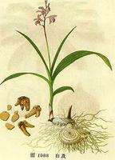

Sixth Blog:
Published Date: 2016-01-06
白芨-中药简介!
白芨: 白芨的传说 :
白芨 ，（学名：Bletilla striata）又名连及草、甘根、白给、箬兰、朱兰(《花镜》)，紫兰、紫蕙、百笠。 属多年生草本球根植物（块根），主要分布在中国、台湾、日本以及缅甸北部。 花美适合观赏之用，其球茎晒干后的名称为白及（又名白芨、明白芨、紫兰根、甘根、白给），属于中草药，其它亦有当作糊料之用途。 一般品种的花色呈紫红色，所以别称紫兰；另有一个变种的花为白色，称为白花白芨（B. s. var. alba）。 其它亦有黄色、粉红色、红色以及蓝色的园艺栽培种。主要花期在春季，但依各地气候之不同，晚冬至夏初都可能开花。 如果种植，夏季因为叶尖容易晒焦，宜采半日照射的方式。
在中草药中有一味叫“白芨”的止血良药，性味苦、甘涩、微寒。入肝、胃、肺经，功能收敛止血，消肿生肌,主治内外伤出血。 不过，它最早的名字不是叫白芨，而是叫白根。至于为什么叫起白芨来，说起来还有一段故事呢。
从前，在一个县衙大牢里，关押着不少犯人。看管他们的老狱卒，为人正派，心眼好，对犯人从来没有打骂过，还时常与犯人谈心，关心他们的生活疾苦。 一天，一个叫白及的死囚忽然病危快要死了，老狱卒忙去禀告县官。县官听后微微一笑说：“再过一个月，白及就要砍头了，现在死了，也省了我们一刀!” 老狱卒听了心想:虽说白及罪大该死，但没有到死期，有病还是要给看的。于是他瞒着县官，从外面请来一个郎中，到大牢里给白及治病，自己为他付的药费。 没过几天，白及的病就好了，为此白及很受感动。 一晃二十多天过去，白及的死期到了。白及告诉老狱卒说：“我七次犯重罪，屡遭刑讯拷问，使肺部受伤以至于呕血。 多亏我有一秘方，皆靠此药止血恢复。方法是，只用白根为末，米汁调服，其效如神。”后来白及被砍头处死，其胸部被剖开后，看见肺部都有十余处伤的窍穴，都已经被填补起来，白根药的颜色也没有改变。 老狱卒牢记此方。后转告其友张郎中，张郎中用此方救治一咳血不止的垂危病人，果然有效，一日即止血，挽救了性命。 一天，张郎中问老狱卒这药叫什么名字，老狱卒因年老记性差，只记得是白及献的方，把白根药名忘掉了，就顺口说了一句：“白及!” 就这样，白根从此就有了“白芨”这个名。
